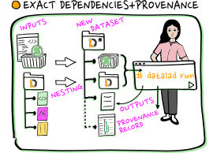
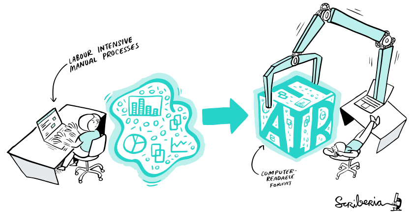
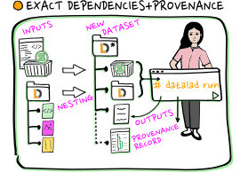

Research data management with DataLad
@ IMPRS-MMFD
1 - Introduction to DataLad
Stephan Heunis jsheunis
jsheunis
|
Michał Szczepanik
mslw
|
|
|
Psychoinformatics lab,
Institute of Neuroscience and Medicine (INM-7) Research Center Jülich |
Slides: https://github.com/datalad-handbook/course/
Welcome!
Approximate workshop schedule- Session 1 (today, 14.00-15h30)
-
Logistics & Intro üßë‚Äçüè´,
Hands-on Terminal Basics üíª,
Demo of core functionality üßë‚Äçüè´üíª - Session 2 (today, 16.00-18.00)
- Hands-on DataLad Basics & Exercises üíª
- Session 3 (tomorrow, 09.00-11.00)
-
Sharing and Collaboration üßë‚Äçüè´,
Hands-on Data publication üíª - Session 4 (tomorrow, 11.30-13.00)
-
Computational reproducibility üßë‚Äçüè´üíª,
Outro üßë‚Äçüè´,
Logistics and links
-
You can find the slide sources at
github.com/datalad-handbook/datalad-course
- Some of today's code-along workshop contents are at psychoinformatics-de.github.io/rdm-course
- The workshop will be interactive. You can access the Jupyterhub environment from your browser at workshop-hub.datalad.org. You are also welcome to follow along on your own system if you have the required tools installed.
- You can log in to the Jupyterhub with a pre-set username (take one out of the jar) and a self-set password. Remember the username and password for tomorrow!
- A requirements.txt file the workshop materials repository details the software environment we setup on the Jupyterhub
Interactivity
- The workshop centers around DataLad for real-world research data management use cases
-
There are no stupid questions; ask anything any time
- Something doesn't look right on your system? Put your hand up or stick a post-it to your screen. We'll take a look together
- We're available outside of sessions, too. Chat about your use cases or questions over a coffee or meal
- 4 sessions = time for more than a standard introduction.
- Materials are available online & persistent, we can be flexible & spontaneous if specific topics interest you
After the workshop
-
If you have a question after the workshop, you can reach out for help:
- Reach out to to the DataLad team via
- Matrix (free, decentralized communication app, no app needed). We run a weekly Zoom office hour (Thursday, 4pm Berlin time) from this room as well.
- the development repository on GitHub
- Reach out to the user community with
- A question on neurostars.org
with a
dataladtag - Find more user tutorials or workshop recordings
- On DataLad's YouTube channel
- In the DataLad Handbook
- In the DataLad RDM course
- In the Official API documentation
Audience response system
Use your phone to scan the QR code, or open the link in a new browser windowOn a scale of rubber ducks...
Research data management
Common problems in science
You write a paper & stay up late to generate good-looking figures,
but you have to tweak many parameters and display options.
The next morning, you have no idea which parameters produced which
figures, and which of the figures fit to what you report in the paper.


Illustration adapted from Scriberia and The Turing Way
https://co.pinterest.com/pin/551128073121451139//imgcredit>
http://phdcomics.com/comics.php?f=1693
http://phdcomics.com/comics.php?f=1693
http://phdcomics.com/comics.php?f=1693
https://www.go-fair.org/fair-principles
Wilkinson et al. The FAIR Guiding Principles for scientific data management
and stewardship. Sci Data 3, 160018 (2016). https://doi.org/10.1038/sdata.2016.18
Why not focus on enabling practical collaboration
(even if just with one's future self)?
Why not make the aspirational goal "FAIR data"
a by-product of enabling efficient research?
a.k.a. The DataLad approach
üíªYour turnüíª set a Git identity using either of
Allow brand-new DataLad functionality:
Find installation and configuration
instructions at
handbook.datalad.org




Common problems in science
Your research project produces phenomenal results, but your
laptop, the only place that stores the source code for the
results, is stolen or breaks

Common problems in science
A graduate student complains that a research idea does not work.
Their supervisor can't figure out what the student did and how,
and the student can't sufficiently explain their approach
(data, algorithms, software).
Weeks of discussion and mis-communication ensues because the
supervisor can't first-hand explore or use the students project.

Common problems in science
You wrote a script during your PhD that applied a specific
method to a dataset. Now, with new data and a new project, you
try to reuse the script, but forgot how it worked.

common problems in science
You try to recreate results from another lab's published paper.
You base your re-implementation on everything reported in their paper,
but the results you obtain look nowhere like the original.

common old problems in science
All these problems were paraphrased from
Buckheit & Donoho, 1995
Let's do better!
What should we do about it???
The pipeline needs to become transparent|
Digital Provenance = A complete description of how a digital file came to be (FAIR principles) |
What should we do about it???
The pipeline needs to become automated|  |
computational reproducibility |
Thus: everything should be FAIR...
F
indableA
ccessibleI
nteroperableR
eusable
But what does FAIR really mean, practically?
- Bench/bed/field-side researchers are an essential source of
valid metadata, critical for FAIR data - Their resources are limited, and they need something in exchange, otherwise FAIR won't happen
Why not focus on enabling practical collaboration
(even if just with one's future self)?
Why not make the aspirational goal "FAIR data"
a by-product of enabling efficient research?
Be FAIR and immediately benefit from it yourself...
...while still working towards the greater good of FAIR dataV
ersion-controlledA
ctionable metadataM
odularP
ortable
a.k.a. The DataLad approach
- A command-line tool, available for all major operating systems (Linux, macOS/OSX, Windows), MIT-licensed
- Build on top of Git and Git-annex
- Allows...
- ... version-controlling arbitrarily large content
- version control data and software alongside to code!
- ... transport mechanisms for sharing and obtaining data
- consume and collaborate on data (analyses) like software
- ... (computationally) reproducible data analysis
- Track and share provenance of all digital objects
- ... and much more
- Completely domain-agnostic
Acknowledgements
|
Funders


Collaborators
|

Examples of what DataLad can be used for:
- Behind-the-scenes infrastructure component for data transport and versioning (e.g., used by OpenNeuro, brainlife.io , the Canadian Open Neuroscience Platform (CONP), CBRAIN)

Examples of what DataLad can be used for:
- Creating and sharing reproducible, open science: Sharing data, software, code, and provenance

Examples of what DataLad can be used for:
- Creating and sharing reproducible, open science: Sharing data, software, code, and provenance

Examples of what DataLad can be used for:
- Central data management and archival system

Examples of what DataLad can be used for:
- Scalable computing framework for reproducible science


Prerequisites: Terminal
- DataLad can be used from the command line data-trim class="language-bash copycode"datalad create mydataset
- ... or with its Python API
- ... and other programming languages can use it via system call
import datalad.api as dl
dl.create(path="mydataset")# in R
> system("datalad create mydataset")
Prerequisites: Terminal
Useful: Unix terminal cheatsheet
üíªYour turnüíª try a few commands at workshop-hub.datalad.org
pwdlsmkdir test_dircd test_direcho "my_words" >> my_file.txtls -lacd ..treecat test_dir/my_file.txtpip list | grep dataladPrerequisites: Installation and Configuration
- Your installed version of DataLad should be 1.0.2
datalad --version
|
|
|
|
datalad configuration --scope global set datalad.extensions.load=nextPrerequisites: Using DataLad
- Every DataLad command consists of a main
command followed by a sub-command. The main and the sub-command can have options.

- Example (main command, subcommand, several subcommand options):
$ datalad save -m "Saving changes" --recursive - Use --help to find out more about any (sub)command
and its options, including detailed description and examples (q to close). Use -h to get a short
overview of all options
$ datalad save -h Usage: datalad save [-h] [-m MESSAGE] [-d DATASET] [-t ID] [-r] [-R LEVELS] [-u] [-F MESSAGE_FILE] [--to-git] [-J NJOBS] [--amend] [--version] [PATH ...] Use '--help' to get more comprehensive information.
So how does it actually work??
focus now, you're going to be doing this soon ;-)
they install datalad...
datalad create --helpdatalad status --helpdatalad save --helpData publishing
datalad siblings --helpdatalad push --helpData consumption
datalad clone --helpdatalad get --helpdatalad drop --helpdatalad update --help
datalad subdatasets --helpdatalad containers-add --helpdatalad run --helpdatalad containers-run --helpdatalad rerun --help